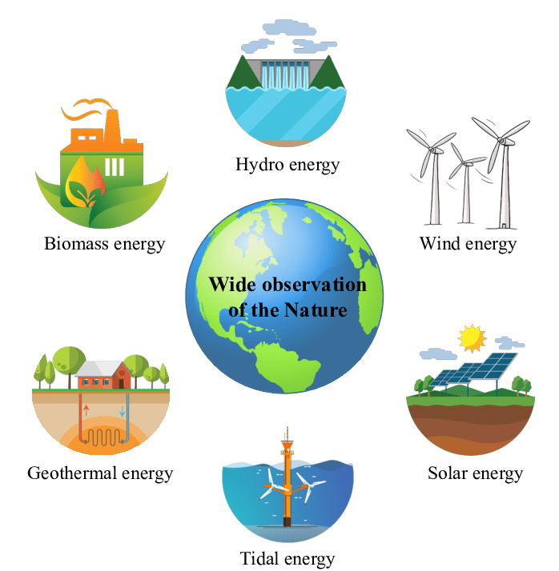
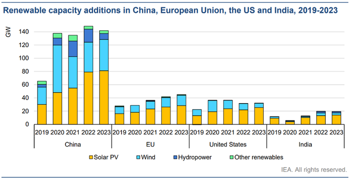

Welcome to our website on sustainable energy and the crucial role that renewable resource
management systems play in achieving it.
As we all know, the world is facing a number of environmental challenges, including climate change and air
pollution. These issues are caused, in part, by our dependence on fossil fuels for energy production. It is
clear that we need to transition to more sustainable sources of energy, and that is where renewable resource
management systems come in.
Strategies:
Implementing sustainable energy requires a multifaceted approach. Firstly, invest in renewable
sources like solar and wind power, fostering innovation for increased efficiency. Encourage energy
conservation through public awareness and incentivize energy-efficient technologies. Develop smart grids for
optimized energy distribution and storage. Support research on emerging technologies such as advanced
nuclear power and energy storage solutions. Implement policies that promote the transition to electric
vehicles, reducing reliance on fossil fuels. Foster international collaboration to share best practices and
accelerate the global shift to sustainable energy. Finally, prioritize education to raise awareness and
cultivate a culture of energy responsibility.
Renewable Resource Management: Catalyst for Sustainable Future
Effective management of renewable resources is pivotal in achieving a sustainable future. It
involves optimizing the utilization of solar, wind, hydro, and other clean energy sources. Robust management
ensures efficient harnessing, distribution, and storage, mitigating environmental impact. Striking a balance
between supply and demand, leveraging advanced technologies for monitoring and control, and fostering
research for innovation are integral aspects. Sustainable practices in renewable resource management
contribute significantly to reducing carbon footprint, enhancing energy security, and paving the way for a
greener, more resilient global energy landscape.
Wide observation to renewable energy sources


Sustainable energy growing in 2023
1)Solar Energy:
→ Continued improvements in photovoltaic technology have led to increased solar panel
efficiency.
Integration of transparent solar cells in windows and other surfaces to harness sunlight without obstructing
views.
2)Wind Energy:
→Advancements in turbine design and materials contribute to higher efficiency and lower
maintenance costs.
Offshore wind farms expand, harnessing stronger and more consistent winds.
3)Energy Storage:
→Enhanced battery technologies with higher energy density and faster charging
capabilities.
Development of large-scale, grid-connected energy storage systems to address intermittency in renewable
sources.
4)Decentralized Energy Systems:
→Rise of microgrids and community-based renewable energy projects, promoting energy
independence.
Increased adoption of distributed energy resources like rooftop solar and small-scale wind turbines.
5)Emerging Technologies:
→Tidal Energy: Progress in harnessing energy from ocean tides with more efficient and
environmentally friendly
technologies.
Geothermal Energy: Improved drilling techniques and increased utilization of geothermal resources for
electricity generation.
6)Smart Grids:
→Integration of advanced sensors, communication, and automation technologies for
efficient
energy distribution.
Grid management systems that optimize energy flow and reduce wastage.
7)Policy and Investment:
→Governments worldwide implement supportive policies, incentives, and regulations to
accelerate
the transition to
sustainable energy.
Increased private and public investments in renewable energy projects, fostering research and development.
8)Electric Transportation:
→ Growth in electric vehicle adoption, supported by expanded charging infrastructure.
Integration of renewable energy sources for charging stations.
9)Carbon Capture and Utilization:
→Advancements in technologies that capture and repurpose carbon emissions from industrial
processes.
Innovative approaches to utilize captured carbon in various industries.
10)Public Awareness and Education:
→ Growing awareness of the environmental impact of energy consumption.
Education initiatives emphasizing the importance of sustainable energy practices.
These developments collectively contribute to a more sustainable and resilient energy
landscape in 2023,
with a
focus on reducing carbon emissions and mitigating climate change.
India’s Achievements of Renewable Energy Target
→ India has achieved its target of achieving 40% of its installed electricity capacity from non-fossil
energy
sources by 2030 in November 2021.
→ India had committed to this target at COP 21 (UNFCCC) , as part of its Nationally Determined
Contributions
(NDCs) (Paris Agreement).
Key Points
Renewable Energy (RE) Capacity of India:
→ The country’s installed Renewable Energy (RE) capacity stands at 150.54 GW (solar: 48.55 GW,
wind: 40.03 GW,
Small hydro Power: 4.83, Bio-power: 10.62, Large Hydro: 46.51 GW) as on 30th Nov. 2021 while its nuclear
energy based installed electricity capacity stands at 6.78 GW.
→India has the 4th largest wind power capacity in the world.
→This brings the total non-fossil based installed energy capacity to 157.32 GW which is 40.1% of
the total
installed electricity capacity of 392.01 GW.
→ At the COP26 India is committed to achieving 500 GW of installed electricity capacity from
non-fossil fuel
sources by the year 2030.
Challenges in Achieving the Target:
Mobilization of the Necessary Finance:
→Gearing up the banking sector for arranging finances for larger deployment goals, exploring
low-interest
rate, long-term international funding, and developing a suitable mechanism for risk mitigation or sharing by
addressing both technical and financial bottlenecks are major challenges.
Land Acquisition:
→Identification of land with Renewable Energy potential, its conversion (if needed), clearance
from land ceiling Act, decision on land lease rent, clearance from revenue department, and other such
clearances take time.
→State governments have to play a major role in acquisition of land for RE projects.
Others
→ Integrating a larger share of renewables with the grid.
→ Enabling supply of firm and dispatchable power from renewables.
→ Enabling penetration of renewables in the so called hard to decarbonize sectors.
.png)
.png)
.png)
.png)
.png)